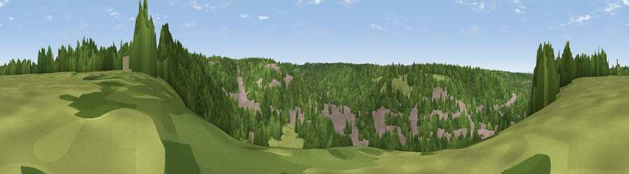

Viewpoint near Hamsey Green
#43618 in England · top 76% of its area beats it · near Hamsey GreenWhere it is
The exact computed spot (TQ 34075 59075). Click the marker for map links.
The view, rendered

A 360° render of this exact spot computed from the terrain model, tree cover and land cover — summer colours, afternoon light, calibrated against photographs of famous viewpoints. Real trees, hedges and buildings will differ in detail.
The panorama
Grey silhouette: terrain skyline in each direction (720 bearings, Earth curvature and refraction included). Dashed green: skyline with trees (+15 m) and buildings (+8 m) as obstacles. Blue strip: how far the ground is visible on each bearing.
Where the view opens
Wedge length = distance to the farthest visible ground on that bearing (vegetation-aware). Rings at 10, 25 and 50 km.
What fills the view
60% woodland · 21% built-up · 19% grassland
Angular shares of the visible panorama (visual magnitude), not map area. Landscape diversity 0.42 (0–1 Shannon).
Key numbers
More beautiful places nearby
The staircase of upgrades: each row has a higher view potential than everything closer. Driving times are estimates from straight-line distance, calibrated against real road routing — check an actual route before setting out.
| Place | Direction | Drive | Score |
|---|---|---|---|
| Viewpoint near Old Coulsdon | WNW · 3 km | ~6 min | 26.8 |
| Viewpoint near Addington | NNE · 4 km | ~9 min | 41.4 |
| Viewpoint near Croydon | N · 4 km | ~10 min | 42.5 |
| Viewpoint near Woldingham | ESE · 5 km | ~10 min | 55.0 |
| Viewpoint near Chaldon | SSW · 6 km | ~12 min | 66.7 |
| Viewpoint near Caterham Valley | SSW · 6 km | ~13 min | 68.0 |
| Box Hill | WSW · 16 km | ~28 min | 70.4 |
| Viewpoint near Box Hill Village | WSW · 16 km | ~28 min | 71.0 |
51.31500, -0.07758 · source: screening · position refined by local search. Computed location — check access rights before visiting.